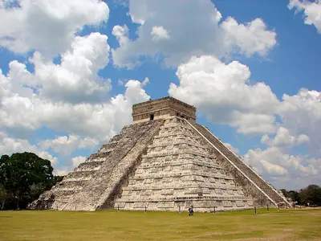
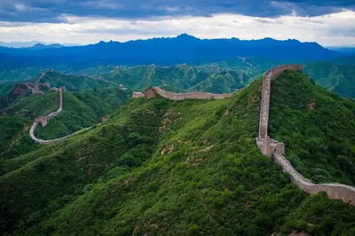
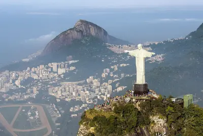
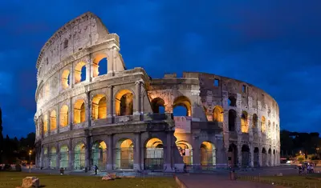
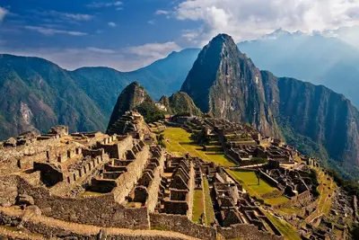
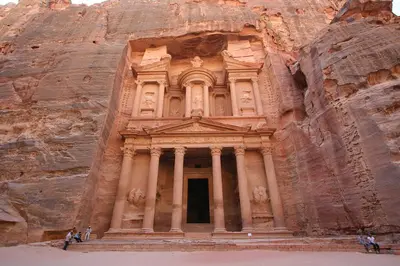

As “novas” Seis Maravilhas do Mundo
Em 7 de julho de 2007, as “Novas Seis Maravilhas do Mundo” foram anunciadas em Lisboa, no Estádio da Luz. São elas:






Em 7 de julho de 2007, as “Novas Seis Maravilhas do Mundo” foram anunciadas em Lisboa, no Estádio da Luz. São elas:





